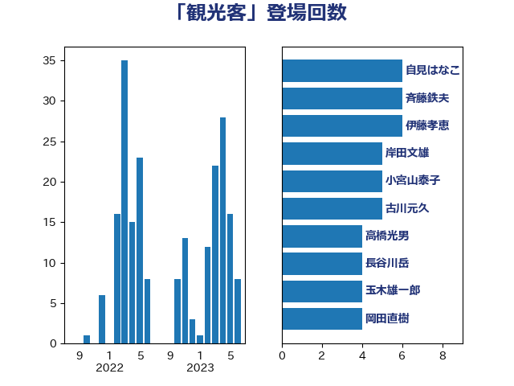

単語「観光客」

| 自見はなこ | 自由民主党 | 6 回 |
| 斉藤鉄夫 | 公明党 | 6 回 |
| 伊藤孝恵 | 国民民主党 | 6 回 |
| 岸田文雄 | 自由民主党 | 5 回 |
| 小宮山泰子 | 立憲民主党 | 5 回 |
| 古川元久 | 国民民主党 | 5 回 |
| 高橋光男 | 公明党 | 4 回 |
| 長谷川岳 | 自由民主党 | 4 回 |
| 玉木雄一郎 | 国民民主党 | 4 回 |
| 岡田直樹 | 自由民主党 | 4 回 |
| 青山繁晴 | 自由民主党 | 3 回 |
| 遠藤良太 | 日本維新の会 | 3 回 |
| 葉梨康弘 | 自由民主党 | 3 回 |
| 菅家一郎 | 自由民主党 | 3 回 |
| 窪田哲也 | 公明党 | 3 回 |
| 広瀬めぐみ | 自由民主党 | 3 回 |
| 和田政宗 | 自由民主党 | 3 回 |
| 吉井章 | 自由民主党 | 3 回 |
| 須藤元気 | 無所属 | 2 回 |
| 金城泰邦 | 公明党 | 2 回 |
| 西野太亮 | 自由民主党 | 2 回 |
| 石井苗子 | 日本維新の会 | 2 回 |
| 石井浩郎 | 自由民主党 | 2 回 |
| 清水真人 | 自由民主党 | 2 回 |
| 浜地雅一 | 公明党 | 2 回 |
| 池下卓 | 日本維新の会 | 2 回 |
| 本田太郎 | 自由民主党 | 2 回 |
| 徳永エリ | 立憲民主党 | 2 回 |
| 山際大志郎 | 自由民主党 | 2 回 |
| 山本佐知子 | 自由民主党 | 2 回 |
| 小森卓郎 | 自由民主党 | 2 回 |
| 室井邦彦 | 日本維新の会 | 2 回 |
| 伊波洋一 | 無所属 | 2 回 |
| 井上哲士 | 日本共産党 | 2 回 |
| 高見康裕 | 自由民主党 | 1 回 |
| 高良鉄美 | 無所属 | 1 回 |
| 階猛 | 立憲民主党 | 1 回 |
| 鈴木英敬 | 自由民主党 | 1 回 |
| 野田聖子 | 自由民主党 | 1 回 |
| 逢坂誠二 | 立憲民主党 | 1 回 |
| 谷合正明 | 公明党 | 1 回 |
| 西銘恒三郎 | 自由民主党 | 1 回 |
| 藤木眞也 | 自由民主党 | 1 回 |
| 藤川政人 | 自由民主党 | 1 回 |
| 蓮舫 | 立憲民主党 | 1 回 |
| 萩生田光一 | 自由民主党 | 1 回 |
| 臼井正一 | 自由民主党 | 1 回 |
| 美延映夫 | 日本維新の会 | 1 回 |
| 紙智子 | 日本共産党 | 1 回 |
| 篠原孝 | 立憲民主党 | 1 回 |
| 竹谷とし子 | 公明党 | 1 回 |
| 竹内真二 | 公明党 | 1 回 |
| 福田昭夫 | 立憲民主党 | 1 回 |
| 神田憲次 | 自由民主党 | 1 回 |
| 磯崎仁彦 | 自由民主党 | 1 回 |
| 石橋通宏 | 立憲民主党 | 1 回 |
| 石原正敬 | 自由民主党 | 1 回 |
| 田中健 | 国民民主党 | 1 回 |
| 浜口誠 | 国民民主党 | 1 回 |
| 浅田均 | 日本維新の会 | 1 回 |
| 水岡俊一 | 立憲民主党 | 1 回 |
| 横沢高徳 | 立憲民主党 | 1 回 |
| 森屋隆 | 立憲民主党 | 1 回 |
| 枝野幸男 | 立憲民主党 | 1 回 |
| 東国幹 | 自由民主党 | 1 回 |
| 杉田水脈 | 自由民主党 | 1 回 |
| 新垣邦男 | 立憲民主党 | 1 回 |
| 平林晃 | 公明党 | 1 回 |
| 島尻安伊子 | 自由民主党 | 1 回 |
| 岸真紀子 | 立憲民主党 | 1 回 |
| 山添拓 | 日本共産党 | 1 回 |
| 山本剛正 | 日本維新の会 | 1 回 |
| 尾身朝子 | 自由民主党 | 1 回 |
| 小里泰弘 | 自由民主党 | 1 回 |
| 小熊慎司 | 立憲民主党 | 1 回 |
| 小島敏文 | 自由民主党 | 1 回 |
| 塩田博昭 | 公明党 | 1 回 |
| 吉田統彦 | 立憲民主党 | 1 回 |
| 古屋範子 | 公明党 | 1 回 |
| 北神圭朗 | 無所属 | 1 回 |
| 保岡宏武 | 自由民主党 | 1 回 |
| 今井絵理子 | 自由民主党 | 1 回 |
| 中野英幸 | 自由民主党 | 1 回 |
| 中条きよし | 日本維新の会 | 1 回 |
| 中川康洋 | 公明党 | 1 回 |
| 中島克仁 | 立憲民主党 | 1 回 |
| 世耕弘成 | 自由民主党 | 1 回 |
| 下野六太 | 公明党 | 1 回 |
| 三宅伸吾 | 自由民主党 | 1 回 |
| 三反園訓 | 無所属 | 1 回 |
| おおつき紅葉 | 立憲民主党 | 1 回 |